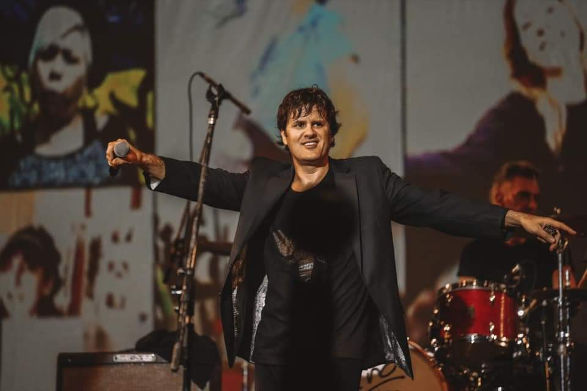

Historia de Andrés Ciro Martínez

Andrés Ciro Martínez nació el 11 de enero de 1968 en Villa del Parque y a los 10 años se mudó con su familia a Ciudad Jardín, barrio que todavía elige para vivir. En la actualidad es uno de los máximos referentes del rock nacional y uno de los artistas más convocantes de la Argentina. Durante 20 años fue el cantante y frontman de Los Piojos y desde 2009 realiza esa función con la banda Ciro y Los Persas.
Su primer contacto con el público sobre un escenario fue en un acto escolar en la Escuela 28 de Ciudad Jardín. Junto a un grupo de compañeros, Ciro coreografió la canción Stayin’ Alive de Bee Gees. Primero probó con las artes escénicas y estudió un tiempo en el teatro El Baldío de Ciudad Jardín, y luego siguió con la música. Con el tiempo uniría esas dos pasiones para convertirse en uno de los artistas más completos arriba de un escenario, principalmente por su carisma inigualable. Comenzó con la música a los 12 años, cuando su papá le regaló su primera armónica, la misma que años más tarde le regalaría a Diego Armando Maradona en un recital. The Rolling Stones fueron su máxima influencia.
A fines de los 80 un amigo del barrio, Pablo Guerra, lo invitó a ensayar con su banda. El grupo se autodenominaba Los Piojos y Ciro se sumó como bajista reemplazando a Miguel Ángel Rodríguez (Micky). Cuando Micky retomó el bajo, Ciro siguió en la banda tocando la armónica, hasta que se hizo cargo de la voz en reemplazo de Diego Chávez. Su primer recital como cantante de Los Piojos fue en el bar Ma Baker en De los Jacarandaes 3029, Ciudad Jardín, donde hoy funciona la bicicletería Rodados Ballester.